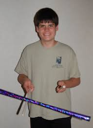
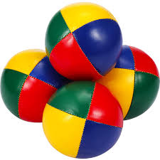
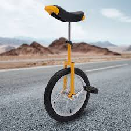

Our Products

The Basic Stick
The Basic Stick is the perfect stick for beginners. The stick rotates slowly to provide extra time for performing stick tricks, but is flashy enough to impress your friends. Enjoy the following:
- Patented Dura-Coat® finish ensures sticks can withstand all weather conditions. More durable than other sticks, these props will keep looking like new for as long as you own them.
- Enhanced stick flexibility provides more bounce, allowing for better tricks. A soft rubber core adds a whole new element to the sticking experience that you have to feel to believe!
- Full customization will give you the chance to own a pair of sticks unlike any others out there. I make exactly what you want, with your colors and your designs.
- A personal touch through both my customization options and hand-crafted designs.
Specifications
- Main Stick
- Weight: 7 oz.
- Length: 24 inches
- Tape: Dura-Coat® finish with laser-style color choices
- Handle Sticks (one pair)
- Weight: 2 oz.
- Length: 18 inches
- Tape: Soft ivory tape with rubber core

Juggling Balls
Our high-quality juggling balls are perfect for performers of all levels. These balls are designed to provide the perfect balance and weight for smooth juggling.
- Durable Material: Made with a durable, easy-to-clean fabric that can withstand heavy use.
- Perfect Weight: Each ball is weighted perfectly for smooth juggling and easy control.
- Customizable: Available in a variety of colors and patterns to suit your style.
Specifications
- Weight: 120 grams per ball
- Diameter: 7 cm
- Material: Synthetic fabric with a soft filling

Unicycles
Our unicycles are designed for both beginners and experienced riders. They offer a smooth and stable ride, perfect for all your circus acts.
- Sturdy Frame: Built with a strong, lightweight aluminum frame for durability and ease of use.
- Adjustable Seat: Features an adjustable seat to accommodate riders of different heights.
- High-Quality Tires: Equipped with high-quality, non-slip tires for a safe and stable ride.
Specifications
- Wheel Size: 20 inches
- Frame Material: Aluminum
- Seat: Adjustable with padding
- Weight: 5 kg